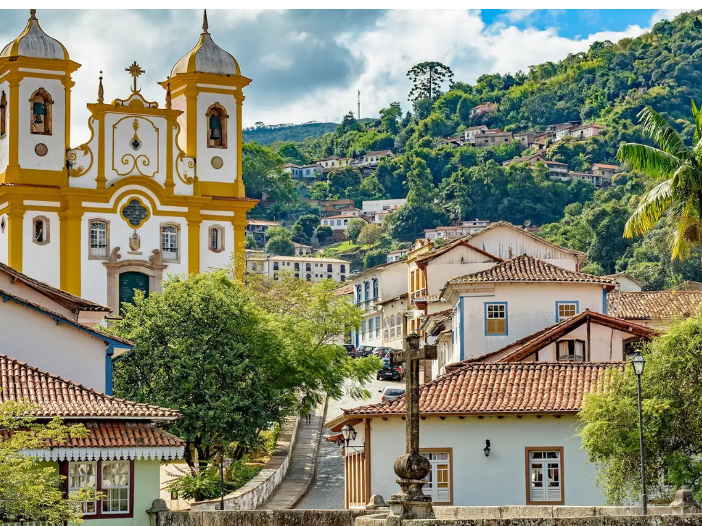

Minas Gerais é um dos estados mais importantes do Brasil, conhecido por sua rica história, forte tradição cultural e grande relevância econômica. Localizado na região Sudeste, destaca-se pela produção de café, minério de ferro e leite, além de possuir um vasto patrimônio histórico preservado em cidades como Ouro Preto e Tiradentes. A culinária mineira também é muito valorizada, com pratos típicos como pão de queijo, feijão-tropeiro e doce de leite. Além disso, Minas Gerais possui belas paisagens naturais, serras, cachoeiras e parques que atraem turistas de todo o país.
